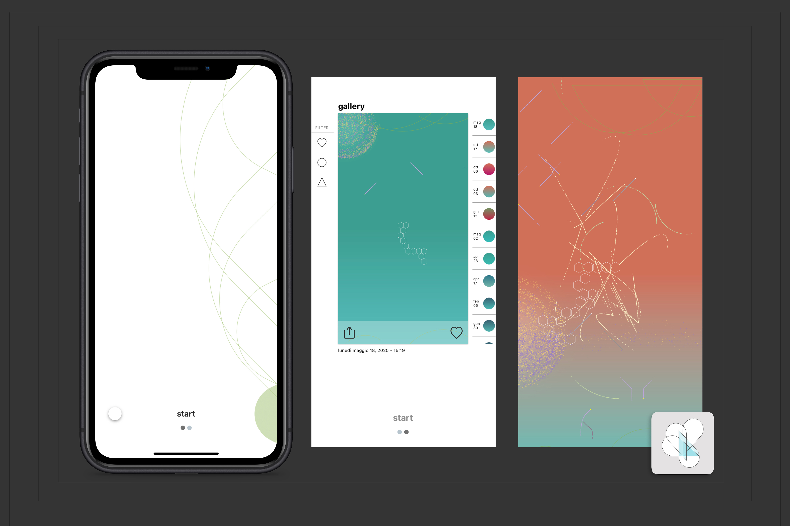
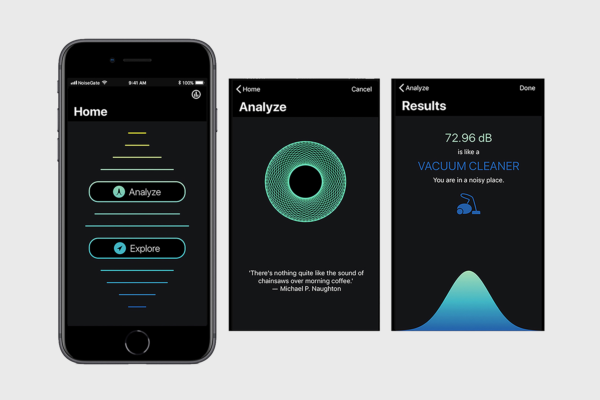
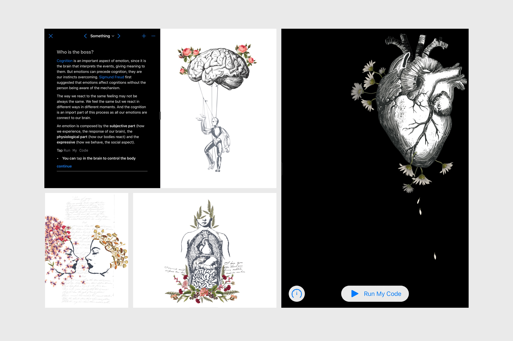
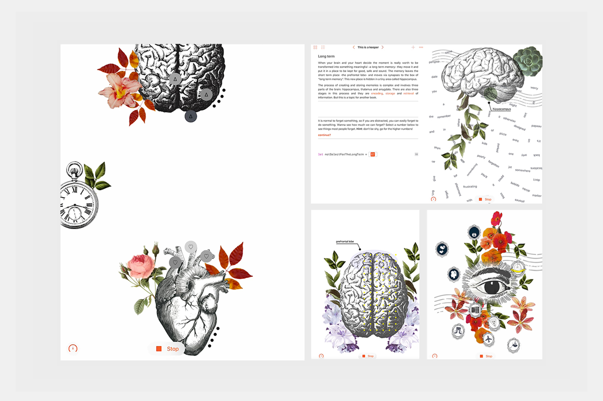

heart/work
heart/work explores the relationship between wellbeing and personal health data. The app transforms data such as heart rate, HRV, activity, breathing exercises, and environmental conditions into generative artwork.
Rather than reducing health to numbers and charts, heart/work offers a more intuitive and reflective way to experience personal data, turning something usually hidden into something visual, personal, and open to interpretation.
The project was developed in 3 months by a team. heart/work was the graduation project in the Apple Developer Academy in Napoli, Italy.

NoiseGate
NoiseGate makes one of the most overlooked aspects of our surroundings visible: sound. The app measures environmental noise and combines individual measurements with a global map of noise pollution.
The project explores how design can help us perceive an otherwise invisible environmental condition, turning sound into something we can understand, compare, and use to become more aware of the places we inhabit.

WWDC19 Submission
Created for my WWDC19 Scholarship application, this Playground Book is a visual and interactive exploration of emotions, why we feel them, how they shape our experiences, and how difficult they can be to explain.
Across six chapters, collages and animations build a narrative around different emotional states. Each chapter takes its title from a Beatles song, chosen for the feeling it evokes, while a restrained colour palette creates a visual atmosphere around each emotion.
The project brings together storytelling, illustration, animation and code to explore something deeply human through an interactive medium. I designed, illustrated, wrote, and developed the Playground Book myself.

WWDC18 Winner Submission
What turns an experience into a memory? This question became the starting point for an exploration of the science and emotion behind how we remember.
Across five chapters, the Playground Book follows the journey of an experience as it becomes a memory: how it is encoded, where it is stored in the brain, and how it changes each time we recall it. Scientific concepts are combined with personal stories, collage, and animation to make an abstract process tangible and relatable.
The project was created for my WWDC18 Scholarship application and became an opportunity to bring together research, storytelling, visual design, and code. I designed, illustrated, wrote, and developed the entire experience.